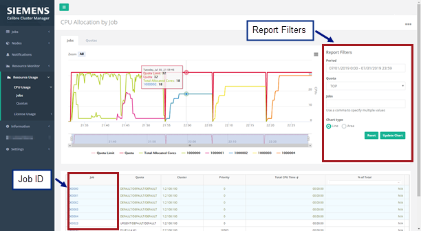
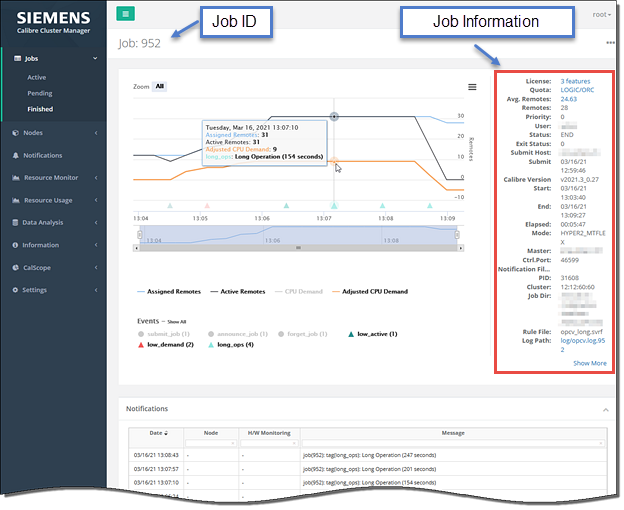
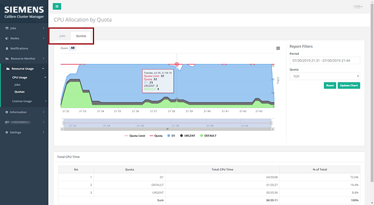
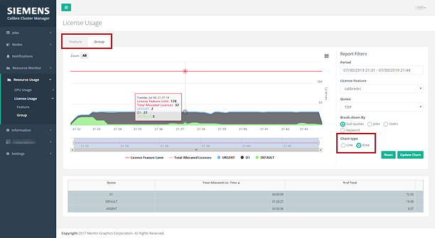

This procedure describes how to use the
Resource Usage web pages in the CalCM dashboard application to view
the CPU allocation by job and quota for a specified report period.
You can also use the Resource Usage web pages to view the license
usage by feature and group.
Procedure
- Open a
browser and enter the server name on which the CalCM daemon is running
and the dashboard server port specified in the CalCM configuration
file (calcmd.conf). For example,
DASHBOARDPORT = 9902
enter in the browser,
http://server_name:9902
- Select
the Resource Usage menu
item in the left pane of the dashboard.
This accesses the Resource Usage web application. The
left pane displays menu items and the right pane displays a report.
The default view is CPU Allocation by Job.
- Scroll
down in the window to view information and try out the controls
that are available for the CPU Allocation by Job page.
You can use the Report Filters pane on the right‑side
of the web page to select the time period that you want for the
displayed information. This enables you to review the resource usage
information for the finished jobs.
Figure 1. CPU Allocation
by Job
- In the upper-right right, click the three dots
to display the chart options, which include X-Axis labels, Chart
Ordinal, and Time Format (Table) settings.
- Click a job ID in the Job column of the
table to open the job detail page.
The job detail page displays a plot
for the selected job with the CPU demand and remote allocations
for the given report period. The right‑side pane of the job detail
page displays detailed information for the job.
Figure 2. Job Detail Information
- Click on
the Avg. Remotes number in the job information in right‑side pane
of the job detail page to display plots of CPU allocation by job
and by quota.
There are also links to License, Quota, and Log Path
information in this pane. You can click the Show More link at the
bottom of the pane to display more information for the selected
job.
- Select
the Resource Usage menu item and then click
the Quotas menu option to display plots of
CPU allocation by quota groups and jobs for the given report period.
Figure 3. CPU
Allocation by Quota
- Select
the Resource Usage menu item and then click
the License Usage menu option to display
plots of license feature and group usage for the given report period.
You can choose between Line and Area chart types to
help you visualize the data.
Figure 4. License
Usage
Results
You have now used the Resource Usage web pages in the CalCM dashboard
web application to view CPU allocation by job and quota along with
license usage by feature and group for a specified report period.